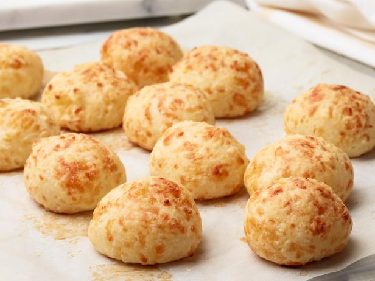

Pao De Queijo

Description
The first time I had these was at a Brazilian Steak house here in Austin, Texas. The texture of these little cheese puffs is a combination of crispy outside and chewing inside. The final result of the dough is pretty runny so you will need to cook them in a mini muffin cups.
Ingredients
- 2 cupts tapioca flour
- 1 cup milk
- 1/2 cup butter
- 1 teaspoon salt
- 1 1/2 cups grated Parmesan cheese
- 2 eggs
Directions
- Preheat oven to 400 degrees F.
- In the mean time bring the milk, salt, and butter to a boil in a sauce pan while constantly stirring mixture.
- Once boiling remove the mixture of milk, salt and butter from heat.
- Slowly add tapioca flour, stirring constantly until thoroughly mixed.
- Add the cheese and eggs to the mixture.
- Mix until smooth.
- Fill each mini muffin cup all the way.
- Bake until golden brown, approximately 20 minutes.